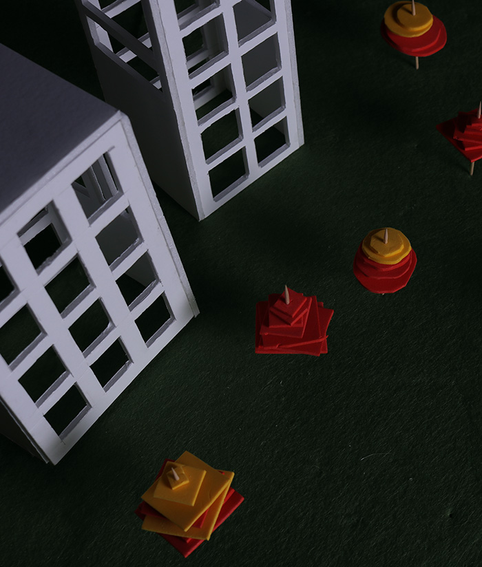
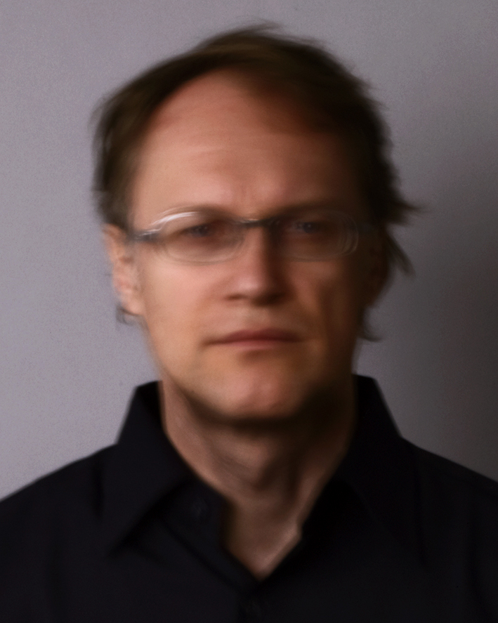

Tal como as formas da arquitectura determinam a organização do estaleiro de obra, as tecnologias e a estrutura económica com que a sociedade organiza os seus modos de produção condicionam, e estimulam, a concepção do projecto.
Da comunicação entre projecto e obra, da organização do tempo e do dinheiro, até à retórica política ou à excitação tecnológica, é na obra que tudo se joga.O trabalho dos arquitectos serve de ferramenta para contrabalançar a ansiedade do cliente perante muitos factores, ou a necessidade de conjugar prazos de construção e optimização de custos com padrões de qualidade?
Curadoria
André Tavares
Johnston Marklee
Nuno Brandão Costa
Office KGDVS
Horário
7 Out - 11 Dez
10:00 – 18:00
Encerra às terças-feiras
Local
Fundação Calouste Gulbenkian
Av. de Berna 45A 1067-001 Lisboa
Sub-Exposições
| Nome/Título | Público-Alvo | Tipologia | Preço |
|---|---|---|---|
| As Formas da Arquitetura | Ensino Secundário | Visita Orientada | 20€ por grupo |
| As Formas das Coisas | 3º Ciclo do Ensino Básico | Visita Orientada | 20€ por grupo |
| Atlas: Com o Mundo às Costas | 1º Ciclo do Ensino Básico | Visita e Jogo | 30€ por grupo |
| Sobre a Persistência das Formas: Diálogos entre Formas | Adultos e Jovens | Visitas Comentadas | Gratuito |
Convidado Especial
Michael Wesely
Michael Wesely é um fotógrafo alemão que capta as suas fotografias usando tempos exposição de câmara extremamente longos, com uma técnica especial que tem vindo a aperfeiçoar desde os anos 90.
Captura principalmente imagens de cidades, edifícios e paisagens por períodos de tempo que podem chegar, como no caso das fotografias da reconstrução da Postdamer Platz em Berlim, a 26 meses de exposição.
Em 2001, Wesely foi convidado pelo MoMa para documentar o processo de construção e remodelação do seu edifício. O seu livro Michael Wesely: Open Shutter foi publicado como resultado dessa experiência.Participou em numerosas exposições a solo por todo o mundo como The Epic View na Mies Van der Rohe Haus em Berlin (2014).

Ateliês convidados
O Local
Sede da Trienal de Lisboa
Morada
Campo de Santa Clara, 145 1100-474 Lisboa
Como chegar
712, 734
Estação de Sta. Apolónia; Santa Apolónia (Linha azul)